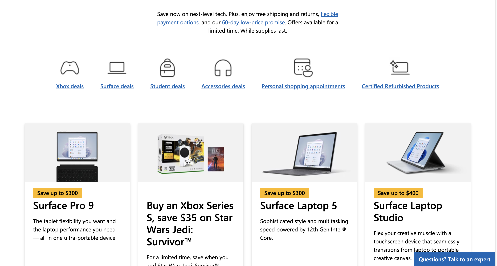

Visual Balance
Nike
Visual balance is a design principle used to create a sense of equilibrium and stability in a web page. It is achieved by distributing visual elements evenly throughout the page, creating a feeling of harmony and balance.
Consistency
Miccrosoft
Consistency is a design principle that ensures that a web page maintains a uniform look and feel across different pages and sections. It involves using the same design elements such as color, typography, and layout consistently throughout the site to create a sense of unity and familiarity for the user.
Visual Alignment
Amazon

Every page need to have Visual alignment because it is used to create a sense of order and coherence in a web page. It involves aligning different elements such as text, images, and icons to create a cohesive design.